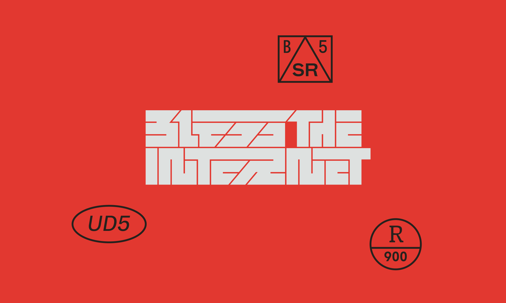
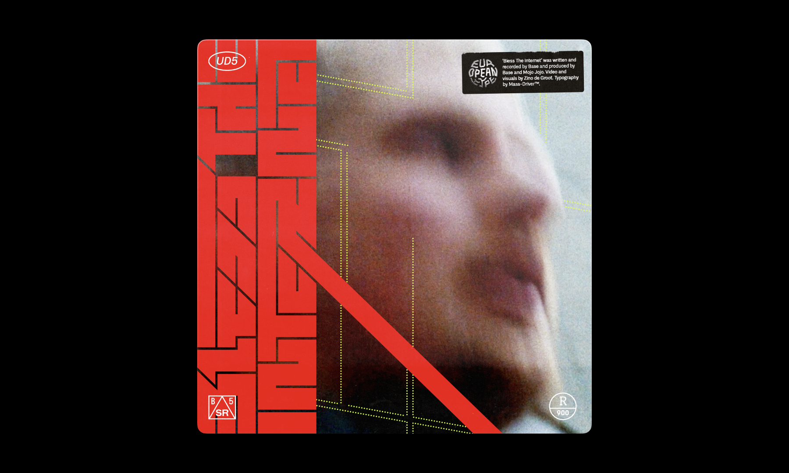

Lettering & type details for a single by Base (2021)
Based on my earlier typeface Chasmata, with extensive modifications. With permission from the artist, I hid the 9×4 rectangular Mass-Driver logomark in the negative space on the first line.

Lettering & Details · The typographic patch details are set MD Nichrome, MD System, MD Primer & Greymarch.

Album Art · The cover art for Base’s single (designed by the artist).